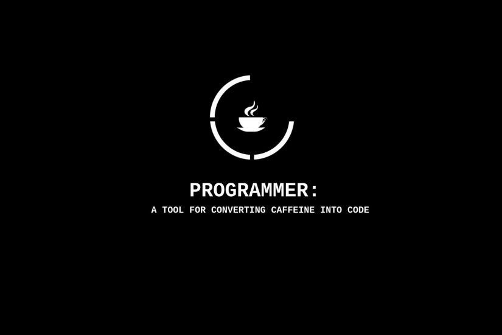

Projeto Cadastro
Projeto aplicação de cadastro(crud), Utilizando: NextJS, Hooks personalizados, TypeScript, Interfaces, Tailwind.css, Integrado com o fire Base

Projeto Calculadora
Um projeto de calculadora feito utilizando o React(jsx).Totalmente funcional

Projeto Painel
Um exemplo de painel de site de roupas esportivas feito com html e css

TAREFAS CADASTRO [EM BREVE!!]
Um projeto simulando um cadastro de tarefas.Podendo adicionar tarefas cadastar,Excluir as tarefas,Pesquisar as tarefas Incluidas e marcar como tarefa concluida Ferramentas sendo utilizadas: React, MongoDB, backEnd(PM2), Jsx, style-loader, file-loader, bootstrap